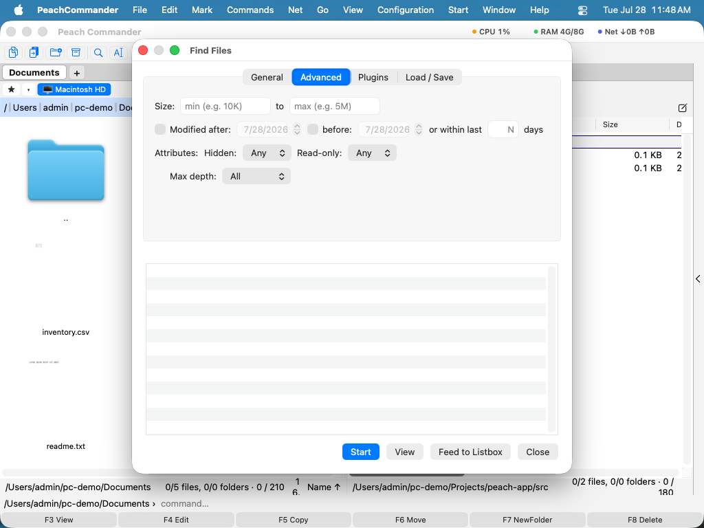

Fájlok keresése
Amikor fájlokat kell felkutatnia bárhol a Macjén — név szerint, tartalmuk szerint, vagy méret és dátum szerint — használja a Fájlok keresése ablakot. Egy vagy több mappában (és azok almappáiban) keres, belenézhet szövegfájlokba és archívumokba, és lehetővé teszi, hogy mindent, amit talál, egyenesen egy panelbe küldjön, így úgy hasson az eredményeken, mintha egy közönséges mappa lenne.
Fájlok keresése név szerint
- Abban a panelben, amely a keresni kívánt mappát mutatja, válassza a Parancsok > Fájlok keresése… lehetőséget (vagy nyomja meg a Cmd+Shift+F-et).
- Az Általános lapon írjon be egy névmintát a Keresés mezőbe. Használhat helyettesítő karaktereket, mint a
*.pdfvagyjelentés_*.docx. Több mappában egyszerre kereséshez sorolja fel őket a kezdőmappa mezőben pontosvesszővel (;) elválasztva. - Kattintson a Start-ra. Az egyezések az alábbi eredménylistában jelennek meg, ahogy megtalálódnak.
- Kattintson duplán bármely eredményre, hogy arra a fájlra ugorjon az aktív panelben, vagy jelöljön ki egy eredményt és kattintson a Megtekintés (F3) gombra a beépített megjelenítőben való megnyitáshoz.
 (Ábra: az Általános lap — keresés névminta szerint egy vagy több mappában.)
(Ábra: az Általános lap — keresés névminta szerint egy vagy több mappában.)
Keresés tartalom, méret és dátum szerint
- A fájlokon belüli kereséshez válassza a Szöveg keresése lehetőséget az Általános lapon, és írja be a keresendő szöveget. A beállítások lehetővé teszik, hogy kis- és nagybetűre érzékennyé tegye, csak egész szó-ra illesszen, a szöveget reguláris kifejezés-ként kezelje, hexadecimális tartalomkeresést végezzen, vagy olyan fájlokat találjon, amelyek nem tartalmazzák a szöveget.
- Váltson a Speciális lapra az eredmények méret szerinti szűkítéséhez (például
10K-tól5M-ig), módosítási dátum tartomány szerint, vagy az utolsó N napban módosított fájlokra. - Kapcsolja be a Keresés archívumokon belül lehetőséget a zip-családú archívumokon (zip, jar, war és hasonlók) belüli nézéshez.
- A keresés arra korlátozásához, amit már kiválasztott, kapcsolja be a Keresés csak a kijelölt elemekben lehetőséget indítás előtt.
- Kapcsolja be a Keresés a fájlmegjegyzésekben is lehetőséget, és a szöveget a tartalom mellett minden fájl megjegyzésében is keresi. Így talál meg egy fájlt abból, amit róla írt — „a megrendelő eredetije”, „a 2026-os exporttal leváltva” —, amikor ilyen a fájlban magában nem szerepel. Az így talált találat a fájl egy sora helyett a megjegyzést mutatja, és nem ad sorszámot, mert a találat nem a fájl szövegében van. A kis- és nagybetű, a teljes szó és a reguláris kifejezések a megjegyzésre ugyanúgy érvényesek, mint a tartalomra; a hexadecimális keresés nem, hiszen a megjegyzés begépelt szöveg. A Nem tartalmazó következetes marad: egy fájl akkor kerül a listára, ha a szöveg sem a tartalmában, sem a megjegyzésében nincs benne. Ha a Jegyzetek bővítmény be van kapcsolva, a jegyzete tartalmi mezőként elérhető, amelyre a Plugins fülön lehet feltételt szabni — lásd Munka a bővítményekkel.
- Némely bővítmény olyan szöveggé tud alakítani egy fájlt, amit a fájl maga nem tartalmaz — a visszafejtő bővítmény egy
.class-ból Java forrást csinál. Kapcsolja be a Keresés a bővítmények által adott szövegben lehetőséget, és ezeket a fájlokat a keresés ebben a szövegben végzi, nem a saját bájtjaikban, így egy forrásbeli fordulat megtalálható egy lefordított osztályban. A lehetőség csak akkor jelenik meg, ha van ilyen bővítmény, és lassabb: a szöveg előállítása fájlonként egy visszafejtő futtatását jelentheti.

(Ábra: a Speciális lap — szűrés méret, dátum és más attribútumok szerint.)Ha vannak bővítményei, amelyek tartalommezőket adnak (mint a képméretek), a Bővítmények lap lehetővé teszi, hogy megköveteljen egy mező egy feltételnek való megfelelését — például csak 1000 képpontnál szélesebb képeket.
 (Ábra: a Bővítmények lap — egyezés a bővítmények által biztosított tartalommezőkön.)
(Ábra: a Bővítmények lap — egyezés a bővítmények által biztosított tartalommezőkön.)
Gyors keresések a Spotlighttal
Olyan helyi mappákhoz, amelyeket a macOS már indexelt, kapcsolja be a Spotlight használata lehetőséget az Általános lapon a szinte azonnali eredményekért. A Spotlight az indexben keres a fájlok beolvasása helyett, így figyelmen kívül hagyja a reguláris kifejezéseket, az almappamélység-korlátokat és a csak-kijelölt hatókört.
Az eredmények újrafelhasználása és átadása
- A Küldés a listadobozba minden eredményt az aktív panelbe helyez ideiglenes listaként, így az egész készletet egyszerre másolhatja, helyezheti át vagy törölheti.
- A Betöltés / Mentés lapon válassza a Mentés sablonként… lehetőséget az aktuális keresés (minták és beállítások) tárolásához és későbbi újbóli kiválasztásához a sablonlistából.
Billentyűparancsok
| Művelet | Billentyűparancs |
|---|---|
| A Fájlok keresése megnyitása | Cmd+Shift+F vagy Option+F7 |
| A keresés indítása / leállítása | Start gomb az ablakban |
| A kijelölt eredmény megtekintése | F3 |
Megjegyzések
- A tartalomkeresés helyi mappáknál teljes fájlokat olvas; más helyeken a nagyon nagy fájlok kimaradnak (nagyjából 16 MB, vagy 64 MB reguláris kifejezés használatakor).
- Az archívumokon belüli keresés a beágyazott archívumok négy szintjéig ereszkedik.
- A Mappák bevonása az eredményekbe azokat a mappákat is felsorolja, amelyek nevei egyeznek, nem csak a fájlokat.
- A Spotlight csak az indexelt helyi mappákat fedi le; hálózati helyekhez vagy mintaalapú egyezéshez hagyja kikapcsolva, és hagyja, hogy a Fájlok keresése beolvasson.